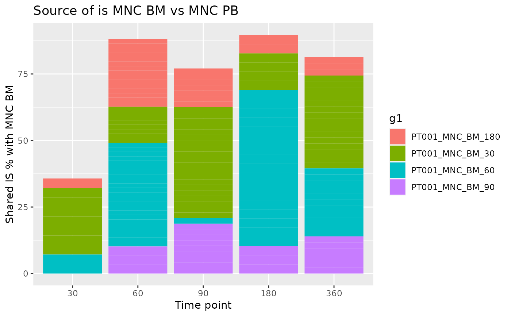

![[Experimental]](figures/lifecycle-experimental.svg) The function computes the sharing between a reference group of interest
for each time point and a selection of groups of interest. In this way
it is possible to observe the percentage of shared integration sites between
reference and each group and identify in which time point a certain IS was
observed for the first time.
The function computes the sharing between a reference group of interest
for each time point and a selection of groups of interest. In this way
it is possible to observe the percentage of shared integration sites between
reference and each group and identify in which time point a certain IS was
observed for the first time.
Arguments
- reference
A data frame containing one or more groups of reference. Groups are identified by
ref_group_key- selection
A data frame containing one or more groups of interest to compare. Groups are identified by
selection_group_key- ref_group_key
Character vector of column names that identify a unique group in the
referencedata frame- selection_group_key
Character vector of column names that identify a unique group in the
selectiondata frame- timepoint_column
Name of the column holding time point info?
- by_subject
Should calculations be performed for each subject separately?
- subject_column
Name of the column holding subjects information. Relevant only if
by_subject = TRUE
See also
Other Analysis functions:
CIS_grubbs(),
comparison_matrix(),
compute_abundance(),
cumulative_count_union(),
cumulative_is(),
is_sharing(),
purity_filter(),
sample_statistics(),
separate_quant_matrices(),
threshold_filter(),
top_integrations()
Examples
data("integration_matrices", package = "ISAnalytics")
data("association_file", package = "ISAnalytics")
aggreg <- aggregate_values_by_key(
x = integration_matrices,
association_file = association_file,
value_cols = c("seqCount", "fragmentEstimate")
)
df1 <- aggreg %>%
dplyr::filter(.data$Tissue == "BM")
df2 <- aggreg %>%
dplyr::filter(.data$Tissue == "PB")
source <- iss_source(df1, df2)
#>
|
| | 0%
|
|=================================== | 50%
|
|======================================================================| 100%
#>
source
#> $PT001
#> g1 g1_SubjectID g1_CellMarker g1_Tissue g1_TimePoint
#> 1: PT001_MNC_BM_0030 PT001 MNC BM 30
#> 2: PT001_MNC_BM_0060 PT001 MNC BM 60
#> 3: PT001_MNC_BM_0180 PT001 MNC BM 180
#> 4: PT001_MNC_BM_0090 PT001 MNC BM 90
#> 5: PT001_MNC_BM_0030 PT001 MNC BM 30
#> 6: PT001_MNC_BM_0060 PT001 MNC BM 60
#> 7: PT001_MNC_BM_0180 PT001 MNC BM 180
#> 8: PT001_MNC_BM_0090 PT001 MNC BM 90
#> 9: PT001_MNC_BM_0030 PT001 MNC BM 30
#> 10: PT001_MNC_BM_0060 PT001 MNC BM 60
#> 11: PT001_MNC_BM_0180 PT001 MNC BM 180
#> 12: PT001_MNC_BM_0090 PT001 MNC BM 90
#> 13: PT001_MNC_BM_0030 PT001 MNC BM 30
#> 14: PT001_MNC_BM_0060 PT001 MNC BM 60
#> 15: PT001_MNC_BM_0180 PT001 MNC BM 180
#> 16: PT001_MNC_BM_0090 PT001 MNC BM 90
#> 17: PT001_MNC_BM_0030 PT001 MNC BM 30
#> 18: PT001_MNC_BM_0060 PT001 MNC BM 60
#> 19: PT001_MNC_BM_0180 PT001 MNC BM 180
#> 20: PT001_MNC_BM_0090 PT001 MNC BM 90
#> g2 g2_SubjectID g2_CellMarker g2_Tissue g2_TimePoint shared
#> 1: PT001_MNC_PB_0060 PT001 MNC PB 60 8
#> 2: PT001_MNC_PB_0060 PT001 MNC PB 60 23
#> 3: PT001_MNC_PB_0060 PT001 MNC PB 60 15
#> 4: PT001_MNC_PB_0060 PT001 MNC PB 60 6
#> 5: PT001_MNC_PB_0180 PT001 MNC PB 180 4
#> 6: PT001_MNC_PB_0180 PT001 MNC PB 180 17
#> 7: PT001_MNC_PB_0180 PT001 MNC PB 180 2
#> 8: PT001_MNC_PB_0180 PT001 MNC PB 180 3
#> 9: PT001_MNC_PB_0030 PT001 MNC PB 30 7
#> 10: PT001_MNC_PB_0030 PT001 MNC PB 30 2
#> 11: PT001_MNC_PB_0030 PT001 MNC PB 30 1
#> 12: PT001_MNC_PB_0030 PT001 MNC PB 30 0
#> 13: PT001_MNC_PB_0090 PT001 MNC PB 90 20
#> 14: PT001_MNC_PB_0090 PT001 MNC PB 90 1
#> 15: PT001_MNC_PB_0090 PT001 MNC PB 90 7
#> 16: PT001_MNC_PB_0090 PT001 MNC PB 90 9
#> 17: PT001_MNC_PB_0360 PT001 MNC PB 360 15
#> 18: PT001_MNC_PB_0360 PT001 MNC PB 360 11
#> 19: PT001_MNC_PB_0360 PT001 MNC PB 360 3
#> 20: PT001_MNC_PB_0360 PT001 MNC PB 360 6
#> is_coord count_g1 count_g2 count_union on_g1 on_g2
#> 1: <data.table[8x3]> 54 59 105 14.814815 13.559322
#> 2: <data.table[23x3]> 93 59 129 24.731183 38.983051
#> 3: <data.table[15x3]> 61 59 105 24.590164 25.423729
#> 4: <data.table[6x3]> 32 59 85 18.750000 10.169492
#> 5: <data.table[4x3]> 54 29 79 7.407407 13.793103
#> 6: <data.table[17x3]> 93 29 105 18.279570 58.620690
#> 7: <data.table[2x3]> 61 29 88 3.278689 6.896552
#> 8: <data.table[3x3]> 32 29 58 9.375000 10.344828
#> 9: <data.table[7x3]> 54 28 75 12.962963 25.000000
#> 10: <data.table[2x3]> 93 28 119 2.150538 7.142857
#> 11: <data.table[1x3]> 61 28 88 1.639344 3.571429
#> 12: <data.table[0x3]> 32 28 60 0.000000 0.000000
#> 13: <data.table[20x3]> 54 48 82 37.037037 41.666667
#> 14: <data.table[1x3]> 93 48 140 1.075269 2.083333
#> 15: <data.table[7x3]> 61 48 102 11.475410 14.583333
#> 16: <data.table[9x3]> 32 48 71 28.125000 18.750000
#> 17: <data.table[15x3]> 54 43 82 27.777778 34.883721
#> 18: <data.table[11x3]> 93 43 125 11.827957 25.581395
#> 19: <data.table[3x3]> 61 43 101 4.918033 6.976744
#> 20: <data.table[6x3]> 32 43 69 18.750000 13.953488
#> on_union
#> 1: 7.6190476
#> 2: 17.8294574
#> 3: 14.2857143
#> 4: 7.0588235
#> 5: 5.0632911
#> 6: 16.1904762
#> 7: 2.2727273
#> 8: 5.1724138
#> 9: 9.3333333
#> 10: 1.6806723
#> 11: 1.1363636
#> 12: 0.0000000
#> 13: 24.3902439
#> 14: 0.7142857
#> 15: 6.8627451
#> 16: 12.6760563
#> 17: 18.2926829
#> 18: 8.8000000
#> 19: 2.9702970
#> 20: 8.6956522
#>
#> $PT002
#> g1 g1_SubjectID g1_CellMarker g1_Tissue g1_TimePoint
#> 1: PT002_MNC_BM_0360 PT002 MNC BM 360
#> 2: PT002_MNC_BM_0030 PT002 MNC BM 30
#> 3: PT002_MNC_BM_0180 PT002 MNC BM 180
#> 4: PT002_MNC_BM_0060 PT002 MNC BM 60
#> 5: PT002_MNC_BM_0090 PT002 MNC BM 90
#> 6: PT002_MNC_BM_0360 PT002 MNC BM 360
#> 7: PT002_MNC_BM_0030 PT002 MNC BM 30
#> 8: PT002_MNC_BM_0180 PT002 MNC BM 180
#> 9: PT002_MNC_BM_0060 PT002 MNC BM 60
#> 10: PT002_MNC_BM_0090 PT002 MNC BM 90
#> 11: PT002_MNC_BM_0360 PT002 MNC BM 360
#> 12: PT002_MNC_BM_0030 PT002 MNC BM 30
#> 13: PT002_MNC_BM_0180 PT002 MNC BM 180
#> 14: PT002_MNC_BM_0060 PT002 MNC BM 60
#> 15: PT002_MNC_BM_0090 PT002 MNC BM 90
#> 16: PT002_MNC_BM_0360 PT002 MNC BM 360
#> 17: PT002_MNC_BM_0030 PT002 MNC BM 30
#> 18: PT002_MNC_BM_0180 PT002 MNC BM 180
#> 19: PT002_MNC_BM_0060 PT002 MNC BM 60
#> 20: PT002_MNC_BM_0090 PT002 MNC BM 90
#> 21: PT002_MNC_BM_0360 PT002 MNC BM 360
#> 22: PT002_MNC_BM_0030 PT002 MNC BM 30
#> 23: PT002_MNC_BM_0180 PT002 MNC BM 180
#> 24: PT002_MNC_BM_0060 PT002 MNC BM 60
#> 25: PT002_MNC_BM_0090 PT002 MNC BM 90
#> g1 g1_SubjectID g1_CellMarker g1_Tissue g1_TimePoint
#> g2 g2_SubjectID g2_CellMarker g2_Tissue g2_TimePoint shared
#> 1: PT002_MNC_PB_0360 PT002 MNC PB 360 2
#> 2: PT002_MNC_PB_0360 PT002 MNC PB 360 0
#> 3: PT002_MNC_PB_0360 PT002 MNC PB 360 2
#> 4: PT002_MNC_PB_0360 PT002 MNC PB 360 0
#> 5: PT002_MNC_PB_0360 PT002 MNC PB 360 0
#> 6: PT002_MNC_PB_0180 PT002 MNC PB 180 2
#> 7: PT002_MNC_PB_0180 PT002 MNC PB 180 15
#> 8: PT002_MNC_PB_0180 PT002 MNC PB 180 5
#> 9: PT002_MNC_PB_0180 PT002 MNC PB 180 1
#> 10: PT002_MNC_PB_0180 PT002 MNC PB 180 2
#> 11: PT002_MNC_PB_0060 PT002 MNC PB 60 0
#> 12: PT002_MNC_PB_0060 PT002 MNC PB 60 8
#> 13: PT002_MNC_PB_0060 PT002 MNC PB 60 0
#> 14: PT002_MNC_PB_0060 PT002 MNC PB 60 4
#> 15: PT002_MNC_PB_0060 PT002 MNC PB 60 0
#> 16: PT002_MNC_PB_0030 PT002 MNC PB 30 0
#> 17: PT002_MNC_PB_0030 PT002 MNC PB 30 3
#> 18: PT002_MNC_PB_0030 PT002 MNC PB 30 4
#> 19: PT002_MNC_PB_0030 PT002 MNC PB 30 1
#> 20: PT002_MNC_PB_0030 PT002 MNC PB 30 0
#> 21: PT002_MNC_PB_0090 PT002 MNC PB 90 0
#> 22: PT002_MNC_PB_0090 PT002 MNC PB 90 9
#> 23: PT002_MNC_PB_0090 PT002 MNC PB 90 5
#> 24: PT002_MNC_PB_0090 PT002 MNC PB 90 4
#> 25: PT002_MNC_PB_0090 PT002 MNC PB 90 0
#> g2 g2_SubjectID g2_CellMarker g2_Tissue g2_TimePoint shared
#> is_coord count_g1 count_g2 count_union on_g1 on_g2
#> 1: <data.table[2x3]> 81 53 132 2.469136 3.773585
#> 2: <data.table[0x3]> 98 53 151 0.000000 0.000000
#> 3: <data.table[2x3]> 43 53 94 4.651163 3.773585
#> 4: <data.table[0x3]> 28 53 81 0.000000 0.000000
#> 5: <data.table[0x3]> 15 53 68 0.000000 0.000000
#> 6: <data.table[2x3]> 81 32 111 2.469136 6.250000
#> 7: <data.table[15x3]> 98 32 115 15.306122 46.875000
#> 8: <data.table[5x3]> 43 32 70 11.627907 15.625000
#> 9: <data.table[1x3]> 28 32 59 3.571429 3.125000
#> 10: <data.table[2x3]> 15 32 45 13.333333 6.250000
#> 11: <data.table[0x3]> 81 18 99 0.000000 0.000000
#> 12: <data.table[8x3]> 98 18 108 8.163265 44.444444
#> 13: <data.table[0x3]> 43 18 61 0.000000 0.000000
#> 14: <data.table[4x3]> 28 18 42 14.285714 22.222222
#> 15: <data.table[0x3]> 15 18 33 0.000000 0.000000
#> 16: <data.table[0x3]> 81 15 96 0.000000 0.000000
#> 17: <data.table[3x3]> 98 15 110 3.061224 20.000000
#> 18: <data.table[4x3]> 43 15 54 9.302326 26.666667
#> 19: <data.table[1x3]> 28 15 42 3.571429 6.666667
#> 20: <data.table[0x3]> 15 15 30 0.000000 0.000000
#> 21: <data.table[0x3]> 81 24 105 0.000000 0.000000
#> 22: <data.table[9x3]> 98 24 113 9.183673 37.500000
#> 23: <data.table[5x3]> 43 24 62 11.627907 20.833333
#> 24: <data.table[4x3]> 28 24 48 14.285714 16.666667
#> 25: <data.table[0x3]> 15 24 39 0.000000 0.000000
#> is_coord count_g1 count_g2 count_union on_g1 on_g2
#> on_union
#> 1: 1.515152
#> 2: 0.000000
#> 3: 2.127660
#> 4: 0.000000
#> 5: 0.000000
#> 6: 1.801802
#> 7: 13.043478
#> 8: 7.142857
#> 9: 1.694915
#> 10: 4.444444
#> 11: 0.000000
#> 12: 7.407407
#> 13: 0.000000
#> 14: 9.523810
#> 15: 0.000000
#> 16: 0.000000
#> 17: 2.727273
#> 18: 7.407407
#> 19: 2.380952
#> 20: 0.000000
#> 21: 0.000000
#> 22: 7.964602
#> 23: 8.064516
#> 24: 8.333333
#> 25: 0.000000
#> on_union
#>
ggplot2::ggplot(source$PT001, ggplot2::aes(
x = as.factor(g2_TimePoint),
y = on_g1, fill = g1
)) +
ggplot2::geom_col() +
ggplot2::labs(
x = "Time point", y = "Shared IS % with MNC BM",
title = "Source of is MNC BM vs MNC PB"
)
